Beautiful Night for Abell Planetary and Palomar Globular hunting
OR ( 9/17/13) : Beautiful Night for Abell Planetary and Palomar Globular hunting. by Steve Gottlieb
On Saturday, September 7th, after a warm clear day at the beach south of Santa Cruz, I headed out in the late afternoon for Kevin's Ritschel's Deep Sky Ranch. The hour and half drive took me through fields of strawberry near Watsonville and Pajaro, farmlands around San Juan Bautista, ranches surrounding Hollister and Tres Pinos and finally a winding canyon road in the Diablo Range east of Paicines. As it turned out, I arrived at the property gate at the exact same time as Mark Johnston and Richard Navarette, and we were greeted by Kevin.
Nighttime conditions were just about ideal -- the temperature was warm enough that even a light jacket was unnecessary for the few hours, completely calm, no dew and clear, dark skies down to the horizon. Transparency was a bit off from ideal, due to residual smoke in the air but dark enough to dive right into faint Abell planetary and Palomar Globulars as soon as it was dark at 9:00. Here were some of the highlights with my 24-inch f/3.7 Starstructure, along with images from the DSS (combined blue/red for color). I've previously observed all of these objects multiple times over the past 30 years, first with a 13-inch and later 18-inch scopes. But every increase in aperture brings additional details and resolution, so in this sense they all appeared new and exciting. I ended the night after 3:00 AM, with some eye-candy galaxies, one of which I've included at the end.
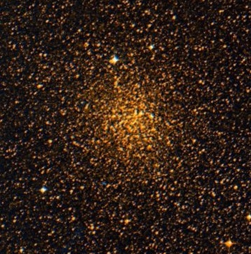
Palomar 7 = IC 1276 18 10 44.3 -07 12 27 V = 10.3; Size 7'
At 200x, Palomar 7 appeared as a fairly faint to moderately bright, roundish glow, ~3' diameter, with a weak concentration. Grows in size with averted vision to at least 3.5' diameter. At 375x, a total of 8-10 stars were resolved with a couple of additional stars occasionally popping. The brightest is a mag 13-13.5 star on the west side with a mag 14 star 35" E. A few additional stars appear to be ~15-15.5 magnitude with the remainder closer to 16th magnitude. A mag 10.6 star is 3' NNE of center.
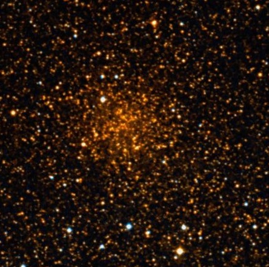
Palomar 10 19 18 02.1 +18 34 18 V = 13.2; Size 3.5'
At 200x visible as an extremely faint, low surface brightness glow, ~2.5' diameter with a mag 13.5 star at the NE edge. The outer halo did not have a distinct edge, but there was a slightly brighter core region, 30"-40" in diameter. A few extremely faint stars were seen at the edge of the halo.
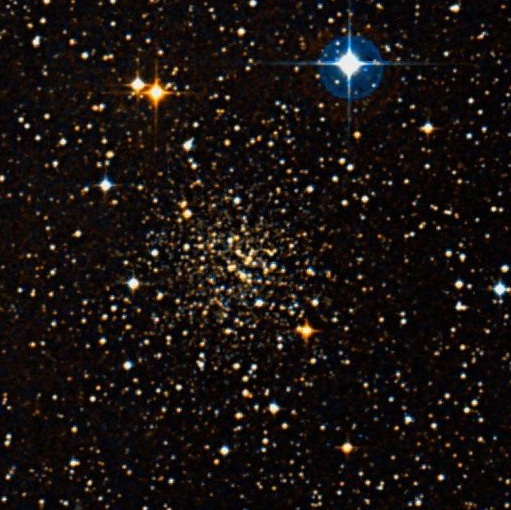
Palomar 11 19 45 14.4 -08 00 26 V = 9.8; Size 8'
At 200x this relatively bright Palomar globular contained a brighter core and a roundish halo ~2.5' diameter, with several mag 15 and fainter stars resolved. Well resolved at 375x and 500x into roughly two dozen mag 15/16 (several extremely faint) stars resolved in addition to 5 brighter mag 14.5-15 stars. The resolved stars are distributed over the entire glow, though more concentrated in the 1' core that is slightly elongated SW to NE. Situated 4' SE of mag 8.6 HD 186496 with several brighter mag 12-13 stars scattered outside the halo of the cluster.
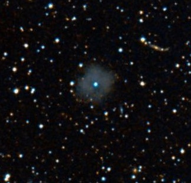
Abell 46 = PK 55+16.1 = PN G055.4+16.0 18 31 18.9 +26 56 17 V = 13.8; Size 63"x60"
Easily visible continuously at 200x using a NPB filter, as a round, 1' well-defined disc with a low surface brightness. The 15th magnitude central star was visible even with the filter and a slightly fainter star was just off the east side [44" from center]. Abell 46 is slightly weaker on the south side, and this often created the impression that the planetary was slightly elongated E-W. Without a filter, the planetary was a very faintly glow surrounding a 15th mag star, and set in a rich star field.
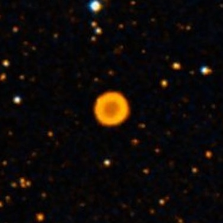
Abell 53 = PK 40-0.1 = PN G040.3-00.4 19 06 45.8 +06 23 56 V = 16.3; Size 30"x27"
At 200x using an NPB filter, Abell 53 appeared faint, fairly small, round, 25-30" diameter. Could hold steadily a fairly crisp disc with a low surface brightness. An extremely faint glow was visible part of the time unfiltered. ?2446, a bright 10" pair of mag 7/9 stars lies 17' NW.
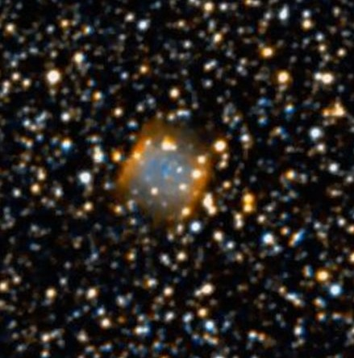
Abell 55 = PK 33-5.1 = PN G033.0-05.3 19 10 25.8 -02 20 25 V = 13.2; Size 47"x32"
Using an OIII and NPB filter at 200x, Abell 55 appeared relatively bright, moderately large, slightly elongated SW-NE, crisp-edged, ~50" diameter. Excellent contrast gain with a filter and easily visible continuously, standing out prominently in the field. Appears slighlty brighter on the north rim, though this may be a faint superimposed star. Easily seen unfiltered, though the field is very rich in faint stars and unresolved background glow, so Abell 55 doesn't stand out nearly as well. Several faint stars are either superimposed or barely off the edges.
Abell 60 = PK 25-11.1 = PN G025.0-11.6 19 19 18.6 -12 14 54 V = 16.2; Size 88"x77"
At 200x using either an NPB or OIII filter, Abell 60 appeared as an extremely faint, roundish disc, ~75" diameter. Not visible continuously, but often seen as a very low surface brightness brightening that occasionally sharpened into a crisp-edged disc.
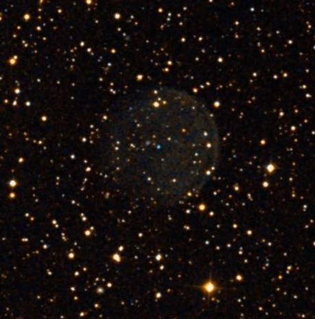
Abell 61 = PK 77+14.1 = PN G077.6+14.7 19 19 10.1 +46 14 36 V = 13.5; Size 201"
Best viewed at 125x using a NPB filter as a faint, large, round disc, 3' diameter with a fairly well defined rim, particularly along the northwest side. A mag 14.2 star is at the north edge and a similar star is just off the NW edge.
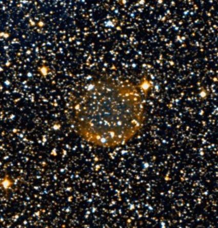
Abell 62 = PK 47-4.1 = PN G047.1-04.2 19 33 18.3 +10 37 01 V = 14.7; Size 161"x151"
Best view was at 200x using an OIII filter. Abell 62 appeared as a faint, roundish glow, ~2' diameter. Several stars are involved around the edges including a mag 12 star at the NE edge. Slightly brighter along along the south rim, near a superimposed mag 12.5/14.1 pair at ~10". Also, slightly brighter or better defined along the west side, where there is a mag 10 star just off the NW edge. The north and east side of the planetary has a more ill-defined border. Also viewed with a NPB filter, but the OIII gave a better contrast gain. Situated in a very rich star field.
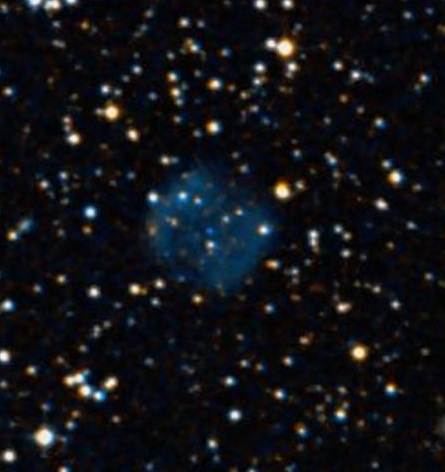
Abell 67 = PK 43-13.1 = PN G043.5-13.4 19 58 27.0 +03 02 52 V = 13.6; Size 69"x61"
Best view at 125x using an OIII filter. Abell 67 was faint, moderately large, round, crisp-edged, low even surface brightness, ~1' diameter. Can hold steadily with averted vision. Slightly less contrast using an NPB filter and increasing the mag to 200x lowers the surface brightness too much.
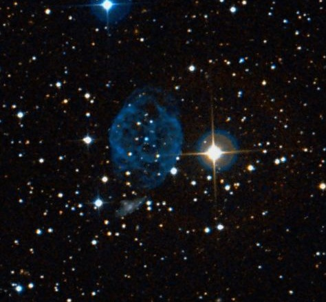
Abell 72 = PK 59-18.1 = PN G059.7-18.7 20 50 02.0 +13 33 28 V = 12.7; Size 134"x121"
Best view at 125x using an OIII or NPB filter. Abell 72 was easily visible as a large, crisp-edged glow just ENE of a mag 8.2 star. In addition, a mag 11.5 star is off the E side, a mag 12-12.5 star is just off the SW edge and a mag 13 star is off the SE edge. Appeared slightly brighter along the north to east portion of the rim and occasionally the rim brightened along the western side and the interior seemed slightly darker, giving a strong impression of annularity. At 200x, several faint superimposed stars, including the central star, are visible unfiltered.
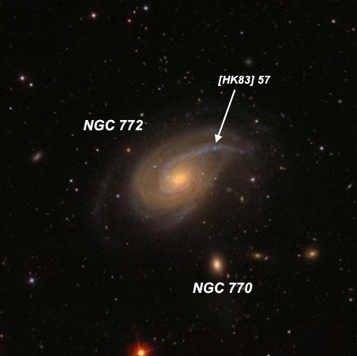
NGC 772 = Arp 78 01 59 19.8 +19 00 30 V = 10.3; Size 7.2'x4.3'; Surf Br = 13.9; PA = 130d
Bright, very large, elongated 5:3 WNW-ESE, 4'x2.5'. Strongly concentrated with a very bright oval core. The halo is clearly asymmetric and more extensive on the NW side. With careful viewing a long arm is visible at 200x extending from the central region towards the NW. The arm is better separated from the main body at 450x and ends near NGC 772:[HK83] 57, a slightly brighter HII knot, that appears as an extremely faint "soft" star.